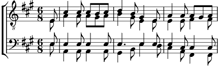

1. J'admire la verdure, si riche autour de moi.
O Dieu de la nature, mon chant s'élève à Toi (bis).
2. L'insecte a son langage pour dire Ta grandeur,
Tu grondes dans l'orage, tu brilles dans la fleur (bis).
3. Je trouve à chaque place les dons de Ton amour,
Mon cœur serait de glace s'il t'oubliait un jour (bis).